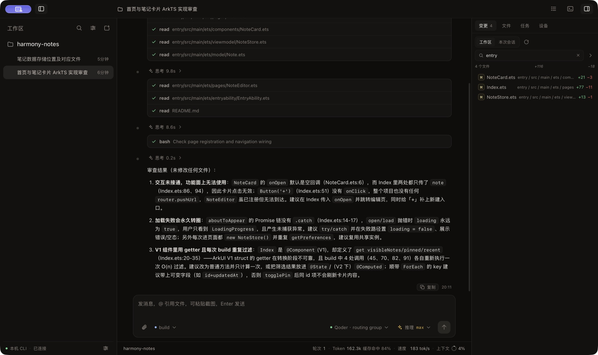

系统要求
- macOS 12 或更高版本；
- Apple Silicon 或 Intel Mac；
- 普通版需要 Node.js、npm 和一个已登录的 DevEco Code CLI；
- Offline 版已包含 CLI，不需要另行安装。
普通版不内置 CLI，应用可以启动但没有 CLI 时无法连接模型或读取会话；Offline 版已解决这一点。
下载和安装
- 在 Releases 页面选择适合你的 DMG；如果不想另装 CLI，选择以
DevEco Code Offline开头的 Offline 版：
- Apple Silicon：文件名带
aarch64或arm64； - Intel：文件名带
x64或x86_64。
双击 DMG，将 DevEco Code 或 DevEco Code Offline 拖入“应用程序”，然后推出磁盘映像。
每个 Release 附带 SHA256SUMS.txt 和 GitHub artifact attestation；
校验命令见仓库的 docs/installation.md。attestation 只证明构建来源，
不能替代 Apple 公证。
Homebrew
已安装 Homebrew 的用户可以通过独立 tap 安装。两个 cask 会按 Apple Silicon /
Intel 选择对应 DMG，并用 Release 的 SHA256SUMS.txt 校验：
brew trust sherlockgougou/tap
brew install --cask sherlockgougou/tap/devecocode-desktop
# Offline 版，内置固定版本 CLI
brew install --cask sherlockgougou/tap/devecocode-desktop-offline
Homebrew 7 起第三方 tap 需要先执行 brew trust sherlockgougou/tap；
这只信任该 tap，不会关闭 macOS 的签名或隔离检查。
cask 仍保留 ad-hoc 签名和未公证提示，不会自动绕过 Gatekeeper；首次打开
仍需要右键“打开”或到“系统设置 → 隐私与安全性”放行。tap 源在
SherlockGougou/homebrew-tap。
首次打开
当前发布包不是 Apple Developer ID 签名，也没有经过公证。macOS 可能阻止直接双击； 这是未签名社区构建的预期行为。
- 在 Finder 中右键
DevEco Code.app或DevEco Code Offline.app，选择“打开”； - 在确认对话框中再次选择“打开”；
- 如果仍被阻止，打开“系统设置 → 隐私与安全性”，点击“仍要打开”。
如果系统提示应用“已损坏”，并且你确认安装包来自本项目 Releases，可以移除 quarantine 属性：
xattr -dr com.apple.quarantine "/Applications/DevEco Code Offline.app"普通版把路径中的 DevEco Code Offline.app 换成 DevEco Code.app。
这会绕过 macOS 的隔离检查，只应对你信任且来源明确的安装包使用。不要用它运行 来源不明的软件。
连接本机 CLI
普通版在终端安装并登录 DevEco Code CLI；Offline 版直接使用应用内置 CLI：
npm i -g @deveco/deveco-code
deveco providers # 或 deveco auth
deveco --version
应用会按“设置中的路径 → DEVECO_BIN_PATH → 常见安装路径 → login shell → PATH”
查找 deveco。如果左栏底部显示 CLI 不可用：
- 在终端执行
which deveco，确认实际路径； - 打开应用“设置 → CLI 与服务”；
- 手动选择该可执行文件，保存并重启应用。
开始一个会话
- 点击左栏“新建会话”或工作区旁的加号；
- 选择已有工作区，或通过“新建工作区…”选择项目目录；
- 在输入框发送消息，输入
@可以引用工作区文件； - Agent 请求权限时，在对话流末尾选择“允许一次 / 总是允许 / 拒绝”；
- 右侧面板查看变更、文件、任务和 HarmonyOS 设备截图。
关闭主窗口会隐藏到菜单栏，托盘菜单可以重新显示或退出应用。首次读取工作区时， macOS 可能请求文稿目录访问权限。

更新与卸载
目前没有自动更新。更新时退出旧版本，下载新的 DMG 并覆盖“应用程序”中的旧应用。
卸载时先完全退出应用，再删除 DevEco Code.app 或 DevEco Code Offline.app。如确认不再需要本地配置、
缓存和日志，可以手动删除：
rm -rf "$HOME/Library/Application Support/DevEco Code Desktop"
rm -rf "$HOME/Library/Logs/DevEco Code Desktop"
不要为了卸载桌面端删除 ~/.local/share/deveco/，除非你明确要同时清除
CLI 会话数据。
常见问题
提示无法验证开发者
右键“打开”，或在“系统设置 → 隐私与安全性 → 仍要打开”。这是未签名应用的预期提示。
提示应用已损坏
先确认下载来源和架构。仅在确认安装包来自本项目 Releases 时使用上面的
xattr 命令；仍无法解决时不要继续运行，重新下载并检查文件。
找不到 CLI
在终端确认 which deveco 和 deveco --version，然后在设置页
手动选择路径。GUI 应用不会自动继承交互式 shell 的完整 PATH。
锁屏后没有响应
CLI 在锁屏或休眠时可能阻塞，解锁后恢复。先解锁，再按提示重试。
设备页没有截图
确认手机已开启开发者模式和 USB 调试，hdc 可执行文件在 PATH 或 SDK 中，
并在手机上授权本机调试。当前版本只支持单帧截图。